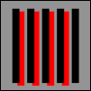

{{draft}}
NASA conducted research on the perception of color, and found that luminance contrast mattered greatly as to how they were perceived. The two images below are from NASA research, specifically, from the article, "Designing With Blue"

"Spatial Localization. Symbols which have the same luminance as their background are perceptually less securely located in space and time than are symbols with higher luminance contrast. They tend to "float" visually or be "captured" by adjacent symbols with high luminance-contrast. The phenomenon seems to be especially problematic for symbol/background combinations that differ only in the blue channel."
Photosensitive seizures may be caused by static images as well as animation. The mechanism for this is poorly understood, but is believed to be linked to "gamma oscillations" set up in the brain. These oscillations in the brain are a different kind of response than other kinds of neurological responses believed to cause photosensitive seizures.
Stripes and patterns are typical of the kinds of images that create problems, and stripes have been studied most closely. There's the potential for causing harm if there are more than five light-dark pairs of stripes in any orientation. They can be parallel, radial, curved or straight, and may be formed by rows of repeating elements.
In 2005, Arnold Wilkins, John Emmett, and Graham Harding evaluated the guidelines for characterizing patterned images that could precipitate seizures. They revised the guidelines to their fundamental core, and came up with a surprisingly simple, but powerful test. which they published in the paper, Characterizing the Patterned Images That Precipitate Seizures and Optimizing Guidelines To Prevent Them
The steps necessary to evaluate material reduce to the following:
Look at the screen
Are there more than five stripes?
If so, do they last longer than 0.5 s?
If so, does the brightness exceed the stated limit?
If so, categorize the motion of the pattern
Are the guidelines contravened?
If so, reduce brightness.
WCAG standards for contrast perception do not take into account the effect of padding. For example, blue text on a gray background is easier to perceive if it is surrounded "locally" by black than by white. There is such a thing as "local" adaptation to colors. The bottom line: padding matters.
Spatial reasoning affects Math learning; consequently, spatial relationships in how math is presented affects cognition. The web developer can do something about this in the manner in which they display math. Animation figures strongly in this arena. For example, "how" an object looks when it is rotated, from different angles, how they look sliced, and how they relate to each other in space all make a difference in an ability to understand Math in spatial terms.
Modern technology enables non-experts to print Braille. Adobe Illustrator, for example, allows one to Typeset ADA Braille for printing out.
The ability to represent spatial patterns accurate to those who are blind is critical for accessibility. For example, knowing Braille is not enough. The Braille dots have to be spatially apart from one another so as to be readable in a "human" way. The human touch does distinguish with ease braille dots that are too close or too far apart from one another.
Space has to surround the braille character. A user of braille does not lay a finger on "top" of a braille character, the user has to move her finger over the character, in the way that a sighted person must move her eyes across text written on a page.
The nature of space can change depending upon what MIME type is being used, and its version. For example, borders on SVG can extend both inward and outward from its dimensions, or for newer versions of SVG, entirely outward from it, thus reducing the space around the SVG to enable perception.
See Also
Heartfelt thanks to Jim Allan of the Diagram Center for his discussions on the topic of alternative means of education.